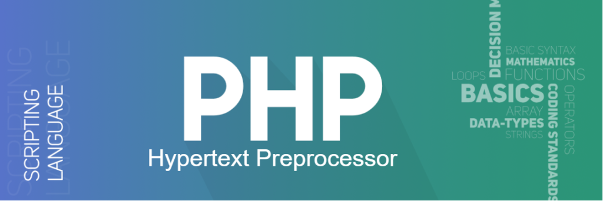

Introduction to PHP Data Types
Variables can store data of different types, and different data types can do different things.
PHP supports the following data types:
- String
- Integer
- Float (also called double)
- Boolean
- Array
- Object
- Null
- Resource
PHP String
A string is a sequence of characters, like "Hello world!". A string can be any text inside quotes. You can use single or double quotes:
<?php
$x = "Hello world!";
$y = 'Hello world!';
echo $x;
echo "<br> ";
echo $y;
?>
Hello World!
Hello World!

PHP Integer
An integer data type is a non-decimal number between -2,147,483,648 and 2,147,483,647.
- An integer must have at least one digit
- An integer must not have a decimal point
- An integer can be either positive or negative
- Integers can be specified in: decimal (base 10), hexadecimal (base 16), octal (base 8), or binary (base 2) notation
<?php
$x = 5985;
var_dump($x);
?>
Output :
int(5985)

PHP Float
A float (floating point number) is a number with a decimal point or a number in exponential form. In the following example $x is a float. The PHP var_dump() function returns the data type and value:
<?php
$x = 10.365;
var_dump($x);
?>
Output:
float(10.365)
PHP Boolean
A Boolean represents two possible states: TRUE or FALSE.
<?php
$x = true;
$y = false;
?>
PHP Array
An array stores multiple values in one single variable. In the following example $cars is an array. The PHP var_dump() function returns the data type and value:
<?php
$cars = array("Volvo","BMW","Toyota");
var_dump($cars);
?>
Output:
array(3) {
[0]=>
string(5) "Volvo"
[1]=>
string(3) "BMW"
[2]=>
string(6) "Toyota"
}

PHP Object
Classes and objects are the two main aspects of object-oriented programming.
A class is a template for objects, and an object is an instance of a class.
When the individual objects are created, they inherit all the properties and behaviors from the class, but each object will have different values for the properties
Let's assume we have a class named Car. A Car can have properties like model, color, etc. We can define variables like $model, $color, and so on, to hold the values of these properties.
When the individual objects (Volvo, BMW, Toyota, etc.) are created, they inherit all the properties and behaviors from the class, but each object will have different values for the properties.
If you create a __construct() function, PHP will automatically call this function when you create an object from a class.
<?php
class Car {
public $color;
public $model;
public function __construct($color, $model) {
$this->color = $color;
$this->model = $model;
}
public function message() {
return "My car is a " . $this->color . " " . $this->model . "!";
}
}
$myCar = new Car("black", "Volvo");
echo $myCar -> message();
echo "<br>";
$myCar = new Car("red", "Toyota");
echo $myCar -> message();
?>
Output:
My car is a black Volvo!
My car is a red Toyota!
PHP NULL Value
Null is a special data type which can have only one value: NULL.
A variable of data type NULL is a variable that has no value assigned to it.
Tip: If a variable is created without a value, it is automatically assigned a value of NULL.
Variables can also be emptied by setting the value to NULL:
<?php
$x = "Hello world!";
$x = null;
var_dump($x);
?>
Output:
NULL
PHP Resource
The special resource type is not an actual data type. It is the storing of a reference to functions and resources external to PHP.
A common example of using the resource data type is a database call.
We will not talk about the resource type here, since it is an advanced topic.
Now that you have done data types in Php, let's SuperGlobals in php